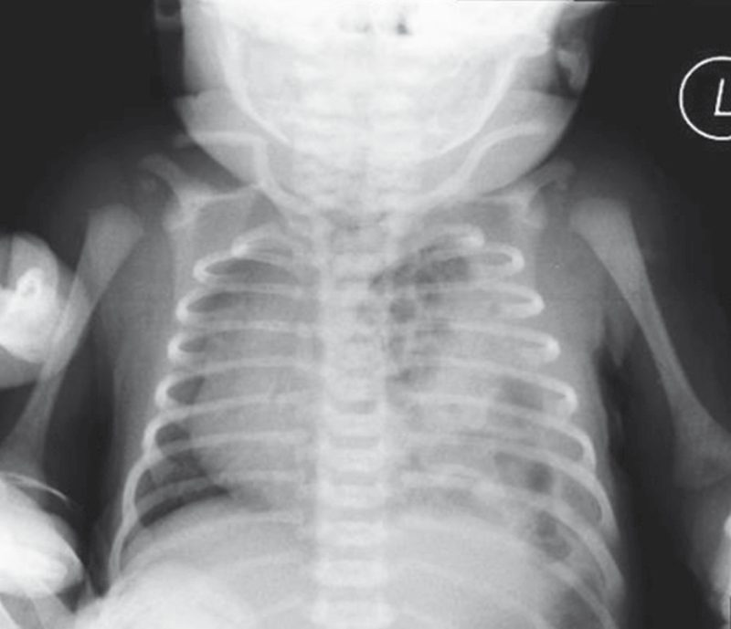

Congenital Diaphragmatic Hernia
Summary
- Congenital diaphragmatic hernia (CDH) is a spectrum of developmental conditions marked by a diaphragmatic defect that allows abdominal contents to herniate into the thoracic cavity, disrupting lung and pulmonary vascular development and causing pulmonary hypoplasia and pulmonary hypertension [1].
- It occurs in about 1:2000–5000 live births, most commonly as a left-sided posterolateral (Bochdalek) defect, and presents at birth with respiratory distress [1][2].
- Management centers on stabilization of pulmonary hypertension before surgical repair of the defect [3][4].
Definition
- CDH is a diaphragmatic defect, ranging from a small opening in the posterior muscle rim to complete absence (agenesis) of the diaphragm, permitting abdominal contents to protrude into the thoracic cavity [1].
- A Bochdalek hernia is a posterior diaphragmatic hernia where the septum transversum fails to unite with the intercostal part of the diaphragm, occurring in infants with gross herniation of abdominal contents and associated lung hypoplasia [5].
- A Morgagni hernia is a congenital diaphragmatic hernia through a persistent anterior diaphragmatic defect, which may present in early adult life with dyspnoea or as an incidental mediastinal mass rather than in the neonatal period [5].
Pathophysiology
- The diaphragm is embryologically derived from the septum transversum, the pleuroperitoneal folds, components of the abdominal wall, and the dorsal mesentery; at 3–4 weeks of gestation these structures begin to fuse, separating the pleural and peritoneal cavities, followed by ingrowth from the abdominal wall forming the muscular diaphragm, typically complete by 9 weeks of gestation [1].
- Incomplete fusion may lead to an anterior/Morgagni hernia (23–28%), a central hernia (2–7%), or, most commonly, a posterolateral Bochdalek hernia (70–75%); Bochdalek hernias occur most commonly on the left (85%), less on the right (13%), or rarely bilaterally (2%) [1].
- Abdominal contents herniating into the thoracic cavity compress the ipsilateral developing lung, which has smaller bronchi, less bronchial branching, and reduced alveolar surface area; the ipsilateral lung is affected more severely, but both lungs show pulmonary hypoplasia [1].
- Pulmonary vasculature is significantly affected by increased thickness of arteriolar smooth muscle and is extremely sensitive to local and systemic vasoactive factors; the severity of pulmonary hypoplasia and pulmonary hypertension significantly impacts overall morbidity and mortality [1].
- Several genes share roles in diaphragmatic, pulmonary, cardiac, and foregut development, so CDH is associated with lung hypoplasia, pulmonary hypertension, cardiac defects, and gastroesophageal reflux, with half of cases having additional anomalies; pulmonary hypoplasia is partly mechanical (lung compression from herniated abdominal contents) and partly genetic (e.g., FOG2, GATA4) [3].
- In the ABSITE Review's description, both lungs are dysfunctional: the hernia side is hypoplastic while the contralateral side develops pulmonary hypertension [2].
Clinical features
- At birth, most infants with CDH experience respiratory distress manifested by grunting, dyspnea, retractions, and cyanosis, although delayed presentations may occur [1].
- Physical examination may show a scaphoid abdomen with diminished breath sounds and bowel sounds audible in the chest, with possible displacement of heart tones depending on the side of the hernia [1].
- Pulse oximetry may show significant preductal/postductal saturation differences indicating right-to-left shunting [1].
- Chest x-ray typically shows intrathoracic bowel loops and mediastinal shift [1][2].
- In 10–20% of cases, CDH is diagnosed after the first 24 hours of life, typically presenting with feeding difficulties, respiratory distress, or pneumonia; Morgagni hernia diagnosis is often delayed until childhood because most infants are asymptomatic [1].
- Overall survival is cited at approximately 50% [2] versus 65–90% in more recent series [1].
Etiology
- Overall CDH incidence is variably reported at 1:2000 to 1:5000 live births; most cases are sporadic, isolated, and non-syndromic, though animal models suggest genetic, environmental, and nutritional factors [1].
- CDH occurs more often on the left side (about 80%, as the liver is thought to protect the right hemidiaphragm) [2].
- Up to 80% of infants have associated anomalies, mostly cardiac and neural tube defects, and malrotation [2].
- In most cases the defect is unilateral, but rarely may be bilateral [1].
Diagnosis
- Routine prenatal ultrasound has enabled diagnosis as early as 15 weeks of gestation, especially for large defects; sonography at 22–24 weeks may show mediastinal shift, juxta-cardiac gastric dilatation, polyhydramnios, or other congenital anomalies, and in right-sided CDH the liver may be seen in the right chest [1].
- Lung head ratio (LHR), a sonographic comparison of contralateral lung size to head circumference (expressed as observed-to-expected ratio for gestational age), is a useful predictor of early neonatal morbidity; major predictors of outcome on fetal evaluation include coexistent congenital anomalies (cardiac, chromosomal), lung hypoplasia, and intrathoracic liver herniation [1].
- Diagnosis can also be made with prenatal ultrasound generally as noted in board-review sources [2].
- Postnatally, diagnosis is made by chest X-ray, with the vast majority of infants developing immediate respiratory distress and pulmonary hypertension [4].
- A prognosis based on observed-to-expected lung–head ratio (ultrasound), total fetal lung volume (MRI), and whether the fetal liver is intrathoracic informs antenatal counselling [3].

Scoring and Severity
The observed-to-expected lung-head ratio (LHR) is used as a prognostic/severity measure, comparing contralateral lung size to head circumference against normal gestational-age values [1][3]. Total fetal lung volume by MRI and the presence of intrathoracic liver herniation are additional prognostic criteria used for counselling and treatment planning [1][3].
Treatment and Management
- It is now accepted that CDH repair is not a surgical emergency: current management is directed toward managing the persistent pulmonary hypertension (right-to-left shunting across the patent foramen ovale or ductus arteriosus) and pulmonary hypoplasia, the leading causes of cardiorespiratory insufficiency, usually resolving within 7–10 days but sometimes taking several weeks [4].
- The mainstay of initial management is aggressive treatment of pulmonary hypertension via airway stabilization, GI decompression, barotrauma limitation ("gentle ventilation"), permissive hypercapnia, and meticulous hemodynamic monitoring while minimizing iatrogenic injury; high-volume centers with protocolized care show enhanced outcomes [1].
- Nitric oxide, high-frequency oscillatory ventilation, and ECMO are effective for stabilizing worsening pulmonary hypertension; agents such as prostaglandin (PGE1), prostacyclin (PGI2), sildenafil, and milrinone may help in select cases though most are not FDA approved for this indication [1].
- Intrauterine treatment with fetal endoluminal tracheal occlusion (FETO), an endoscopic in utero balloon placement typically between 27–29 weeks with interval retrieval, increases lung fluid retention and subsequent lung growth; a meta-analysis suggests it may reduce pulmonary hypertension, ECMO use, and mortality, and the TOTAL randomized controlled trial demonstrated a significant survival benefit at discharge and 6 months for severe cases, though complications include preterm labor, premature rupture of membranes, premature birth, and fetal demise [1].
- Similarly, board-review sources note that treatment includes high-frequency ventilation, inhaled nitric oxide, and possibly ECMO, with the mandate to stabilize patients before operating [2].
- Optimal timing of surgical repair, for infants without cardiopulmonary instability and not on ECMO, is likely deferral of 48–72 hours to limit risks of pulmonary vascular lability from surgical stress; timing in patients on ECMO remains controversial, with some favoring repair during ECMO and others favoring repair at weaning/decannulation, and no prospective randomized data exists to support either approach (bleeding complications are higher when repaired on ECMO) [1].
- After birth, intubation, muscle relaxation, and gentle ventilation aim to maintain pH and oxygen saturation to avoid right-to-left shunting; permissive hypercapnia and high-frequency oscillation may help, and cardiac dysfunction (assessed by echocardiography) may respond to nitric oxide, prostaglandin E1, milrinone, and inotropes, with severe dysfunction requiring extracorporeal life support (ECLS) [3].
- Unlike traumatic diaphragmatic hernias, urgently reducing the bowel does not improve gas exchange in a congenital diaphragmatic hernia [3].
Surgeries
- Both open and laparoscopic repair are feasible, without clear data on the optimum approach or long-term outcomes; repair of a posterolateral CDH is usually performed through an ipsilateral subcostal abdominal incision with excision of the hernia sac if present, followed by reduction of intrathoracic viscera into the abdomen [1].
- Identification and mobilization of the anterior medial leaflet facilitates tension-free closure of the posterolateral defect with interrupted nonabsorbable sutures, sometimes with Teflon pledgets [1].
- Primary repair is preferred, but large defects may require reconstructive techniques including rectus abdominis or latissimus dorsi muscle flaps, or prosthetic materials (Gore-Tex patches most widely used; biodegradable regenerative extracellular matrix biomaterials such as Surgisis have utility); prosthetic patches offer shorter operative time and tension-free repair [1].
- Thoracostomy tube placement is generally unnecessary, especially if postoperative radiographs show immediate mediastinal shift toward the midline [1].
- Reduction of viscera may cause loss of abdominal domain and impending abdominal compartment syndrome, requiring temporary abdominal silo placement with interval closure, skin-only closure with delayed definitive fascial closure, or prosthetic patch abdominoplasty [1].
- The defect can be approached from the abdomen or the chest, either open or minimally invasively; a small defect may need only a few sutures, while a larger one needs a conical Silastic or Gore-Tex patch, and a hernial sac may be removed or plicated [3].
- Reconstructive treatment requires the reduction of bowel and repair of the defect, possibly with mesh, via an abdominal approach, with inspection of the bowel run for visceral anomalies [2].
Complications
- Bleeding complications are significantly higher in patients repaired while on ECMO, requiring careful attention to hemostasis [1].
- Reduction of intrathoracic viscera can precipitate abdominal compartment syndrome due to loss of abdominal domain [1].
- Long-term morbidities for CDH survivors include chronic lung disease, scoliosis, growth retardation, pectus excavatum deformities, gastroesophageal reflux disease, and foregut dysmotility [1].
- Infants receiving aggressive and prolonged neonatal intensive care have a high incidence of developmental delay, seizures, and hearing loss; some develop chronic disease from persistent pulmonary hypertension of the newborn (PPHN) and respiratory dysfunction [1].
- FETO carries risks of preterm labor, premature rupture of membranes, premature birth, and fetal demise [1].
Prognosis
- Advances in research and therapeutics over recent decades have led to improved survival outcomes of 65–90% [1], although overall survival is cited elsewhere as approximately 50% [2].
- The severity of pulmonary hypoplasia and pulmonary hypertension significantly impacts overall morbidity and mortality [1].
- Major fetal predictors of outcome include coexistent congenital anomalies (cardiac, chromosomal), degree of lung hypoplasia, and intrathoracic liver herniation [1].
References
- Sabiston Textbook of Surgery, 22nd ed., Ch. 117 Pediatric Surgery
- The ABSITE Review 2022, Diaphragmatic Hernias and Chest Wall section, "bowel in chest"
- Bailey & Love's Short Practice of Surgery, 28th ed., Ch. 18 Neonatal surgery
- Schwartz's Principles of Surgery: ABSITE and Board Review, Ch. 39 Pediatric Surgery
- Oxford Handbook of Clinical Surgery, 5th ed., Glossary